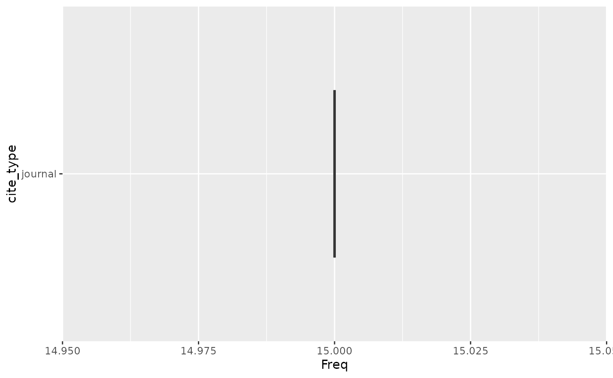

1. Installation
# CRAN (once available):
install.packages("wikilite")
# Development version from GitHub:
remotes::install_github("jsobel1/wikilite")2. Single-article workflow
The basic workflow fetches the most recent revision of an article and computes quality metrics.
library(wikilite)
# Fetch the most recent revision of Zeitgeber
art <- get_article_most_recent_table("Zeitgeber")
# SciScore: proportion of journal citations (0–1)
get_sci_score(art$`*`)
#> [1] 1
# Raw counts
get_doi_count(art$`*`)
#> [1] 13
get_refCount(art$`*`)
#> [1] 16Results are cached to disk by default — subsequent calls with the same arguments return instantly.
3. Category workflow
# Get all article titles in a Wikipedia category
articles <- get_pagename_in_cat("Circadian rhythm")
# Fetch most recent revisions for all articles
recent <- get_category_articles_most_recent(articles)
# Or fetch in parallel with 4 workers (requires furrr + future)
history <- get_category_articles_history(articles, workers = 4L)4. Multilingual support
All API functions accept a lang parameter:
# French Wikipedia
fr_art <- get_article_most_recent_table("COVID-19", lang = "fr")
# German Wikipedia category
de_articles <- get_pagename_in_cat("Chronobiologie", lang = "de")5. Citation extraction and parsing
art <- get_article_most_recent_table("Zeitgeber")
# Extract all DOIs
doi_df <- get_regex_citations_in_wiki_table(art, pkg.env$doi_regexp)
# Parse all CS1 templates into a tidy data frame
parsed <- get_parsed_citations(art)
head(parsed)
#> art
#> journal |doi=10.1001/archpsyc.1988.01800340076012|title=Social Zeitgebers and Biological Rhythms|year=1988|last1=Ehlers|first1=Cindy L.|last2=Frank|first2=E.|last3=Kupfer|first3=D. J.|journal=Archives of General Psychiatry|volume=45|issue=10|pages=948–52|pmid=30482261 Zeitgeber
#> journal |doi=10.1001/archpsyc.1988.01800340076012|title=Social Zeitgebers and Biological Rhythms|year=1988|last1=Ehlers|first1=Cindy L.|last2=Frank|first2=E.|last3=Kupfer|first3=D. J.|journal=Archives of General Psychiatry|volume=45|issue=10|pages=948–52|pmid=30482262 Zeitgeber
#> journal |doi=10.1001/archpsyc.1988.01800340076012|title=Social Zeitgebers and Biological Rhythms|year=1988|last1=Ehlers|first1=Cindy L.|last2=Frank|first2=E.|last3=Kupfer|first3=D. J.|journal=Archives of General Psychiatry|volume=45|issue=10|pages=948–52|pmid=30482263 Zeitgeber
#> journal |doi=10.1001/archpsyc.1988.01800340076012|title=Social Zeitgebers and Biological Rhythms|year=1988|last1=Ehlers|first1=Cindy L.|last2=Frank|first2=E.|last3=Kupfer|first3=D. J.|journal=Archives of General Psychiatry|volume=45|issue=10|pages=948–52|pmid=30482264 Zeitgeber
#> journal |doi=10.1001/archpsyc.1988.01800340076012|title=Social Zeitgebers and Biological Rhythms|year=1988|last1=Ehlers|first1=Cindy L.|last2=Frank|first2=E.|last3=Kupfer|first3=D. J.|journal=Archives of General Psychiatry|volume=45|issue=10|pages=948–52|pmid=30482265 Zeitgeber
#> journal |doi=10.1001/archpsyc.1988.01800340076012|title=Social Zeitgebers and Biological Rhythms|year=1988|last1=Ehlers|first1=Cindy L.|last2=Frank|first2=E.|last3=Kupfer|first3=D. J.|journal=Archives of General Psychiatry|volume=45|issue=10|pages=948–52|pmid=30482266 Zeitgeber
#> revid
#> journal |doi=10.1001/archpsyc.1988.01800340076012|title=Social Zeitgebers and Biological Rhythms|year=1988|last1=Ehlers|first1=Cindy L.|last2=Frank|first2=E.|last3=Kupfer|first3=D. J.|journal=Archives of General Psychiatry|volume=45|issue=10|pages=948–52|pmid=30482261 1330736183
#> journal |doi=10.1001/archpsyc.1988.01800340076012|title=Social Zeitgebers and Biological Rhythms|year=1988|last1=Ehlers|first1=Cindy L.|last2=Frank|first2=E.|last3=Kupfer|first3=D. J.|journal=Archives of General Psychiatry|volume=45|issue=10|pages=948–52|pmid=30482262 1330736183
#> journal |doi=10.1001/archpsyc.1988.01800340076012|title=Social Zeitgebers and Biological Rhythms|year=1988|last1=Ehlers|first1=Cindy L.|last2=Frank|first2=E.|last3=Kupfer|first3=D. J.|journal=Archives of General Psychiatry|volume=45|issue=10|pages=948–52|pmid=30482263 1330736183
#> journal |doi=10.1001/archpsyc.1988.01800340076012|title=Social Zeitgebers and Biological Rhythms|year=1988|last1=Ehlers|first1=Cindy L.|last2=Frank|first2=E.|last3=Kupfer|first3=D. J.|journal=Archives of General Psychiatry|volume=45|issue=10|pages=948–52|pmid=30482264 1330736183
#> journal |doi=10.1001/archpsyc.1988.01800340076012|title=Social Zeitgebers and Biological Rhythms|year=1988|last1=Ehlers|first1=Cindy L.|last2=Frank|first2=E.|last3=Kupfer|first3=D. J.|journal=Archives of General Psychiatry|volume=45|issue=10|pages=948–52|pmid=30482265 1330736183
#> journal |doi=10.1001/archpsyc.1988.01800340076012|title=Social Zeitgebers and Biological Rhythms|year=1988|last1=Ehlers|first1=Cindy L.|last2=Frank|first2=E.|last3=Kupfer|first3=D. J.|journal=Archives of General Psychiatry|volume=45|issue=10|pages=948–52|pmid=30482266 1330736183
#> type
#> journal |doi=10.1001/archpsyc.1988.01800340076012|title=Social Zeitgebers and Biological Rhythms|year=1988|last1=Ehlers|first1=Cindy L.|last2=Frank|first2=E.|last3=Kupfer|first3=D. J.|journal=Archives of General Psychiatry|volume=45|issue=10|pages=948–52|pmid=30482261 journal
#> journal |doi=10.1001/archpsyc.1988.01800340076012|title=Social Zeitgebers and Biological Rhythms|year=1988|last1=Ehlers|first1=Cindy L.|last2=Frank|first2=E.|last3=Kupfer|first3=D. J.|journal=Archives of General Psychiatry|volume=45|issue=10|pages=948–52|pmid=30482262 journal
#> journal |doi=10.1001/archpsyc.1988.01800340076012|title=Social Zeitgebers and Biological Rhythms|year=1988|last1=Ehlers|first1=Cindy L.|last2=Frank|first2=E.|last3=Kupfer|first3=D. J.|journal=Archives of General Psychiatry|volume=45|issue=10|pages=948–52|pmid=30482263 journal
#> journal |doi=10.1001/archpsyc.1988.01800340076012|title=Social Zeitgebers and Biological Rhythms|year=1988|last1=Ehlers|first1=Cindy L.|last2=Frank|first2=E.|last3=Kupfer|first3=D. J.|journal=Archives of General Psychiatry|volume=45|issue=10|pages=948–52|pmid=30482264 journal
#> journal |doi=10.1001/archpsyc.1988.01800340076012|title=Social Zeitgebers and Biological Rhythms|year=1988|last1=Ehlers|first1=Cindy L.|last2=Frank|first2=E.|last3=Kupfer|first3=D. J.|journal=Archives of General Psychiatry|volume=45|issue=10|pages=948–52|pmid=30482265 journal
#> journal |doi=10.1001/archpsyc.1988.01800340076012|title=Social Zeitgebers and Biological Rhythms|year=1988|last1=Ehlers|first1=Cindy L.|last2=Frank|first2=E.|last3=Kupfer|first3=D. J.|journal=Archives of General Psychiatry|volume=45|issue=10|pages=948–52|pmid=30482266 journal
#> id_cite
#> journal |doi=10.1001/archpsyc.1988.01800340076012|title=Social Zeitgebers and Biological Rhythms|year=1988|last1=Ehlers|first1=Cindy L.|last2=Frank|first2=E.|last3=Kupfer|first3=D. J.|journal=Archives of General Psychiatry|volume=45|issue=10|pages=948–52|pmid=30482261 1
#> journal |doi=10.1001/archpsyc.1988.01800340076012|title=Social Zeitgebers and Biological Rhythms|year=1988|last1=Ehlers|first1=Cindy L.|last2=Frank|first2=E.|last3=Kupfer|first3=D. J.|journal=Archives of General Psychiatry|volume=45|issue=10|pages=948–52|pmid=30482262 1
#> journal |doi=10.1001/archpsyc.1988.01800340076012|title=Social Zeitgebers and Biological Rhythms|year=1988|last1=Ehlers|first1=Cindy L.|last2=Frank|first2=E.|last3=Kupfer|first3=D. J.|journal=Archives of General Psychiatry|volume=45|issue=10|pages=948–52|pmid=30482263 1
#> journal |doi=10.1001/archpsyc.1988.01800340076012|title=Social Zeitgebers and Biological Rhythms|year=1988|last1=Ehlers|first1=Cindy L.|last2=Frank|first2=E.|last3=Kupfer|first3=D. J.|journal=Archives of General Psychiatry|volume=45|issue=10|pages=948–52|pmid=30482264 1
#> journal |doi=10.1001/archpsyc.1988.01800340076012|title=Social Zeitgebers and Biological Rhythms|year=1988|last1=Ehlers|first1=Cindy L.|last2=Frank|first2=E.|last3=Kupfer|first3=D. J.|journal=Archives of General Psychiatry|volume=45|issue=10|pages=948–52|pmid=30482265 1
#> journal |doi=10.1001/archpsyc.1988.01800340076012|title=Social Zeitgebers and Biological Rhythms|year=1988|last1=Ehlers|first1=Cindy L.|last2=Frank|first2=E.|last3=Kupfer|first3=D. J.|journal=Archives of General Psychiatry|volume=45|issue=10|pages=948–52|pmid=30482266 1
#> variable
#> journal |doi=10.1001/archpsyc.1988.01800340076012|title=Social Zeitgebers and Biological Rhythms|year=1988|last1=Ehlers|first1=Cindy L.|last2=Frank|first2=E.|last3=Kupfer|first3=D. J.|journal=Archives of General Psychiatry|volume=45|issue=10|pages=948–52|pmid=30482261 doi
#> journal |doi=10.1001/archpsyc.1988.01800340076012|title=Social Zeitgebers and Biological Rhythms|year=1988|last1=Ehlers|first1=Cindy L.|last2=Frank|first2=E.|last3=Kupfer|first3=D. J.|journal=Archives of General Psychiatry|volume=45|issue=10|pages=948–52|pmid=30482262 title
#> journal |doi=10.1001/archpsyc.1988.01800340076012|title=Social Zeitgebers and Biological Rhythms|year=1988|last1=Ehlers|first1=Cindy L.|last2=Frank|first2=E.|last3=Kupfer|first3=D. J.|journal=Archives of General Psychiatry|volume=45|issue=10|pages=948–52|pmid=30482263 year
#> journal |doi=10.1001/archpsyc.1988.01800340076012|title=Social Zeitgebers and Biological Rhythms|year=1988|last1=Ehlers|first1=Cindy L.|last2=Frank|first2=E.|last3=Kupfer|first3=D. J.|journal=Archives of General Psychiatry|volume=45|issue=10|pages=948–52|pmid=30482264 last1
#> journal |doi=10.1001/archpsyc.1988.01800340076012|title=Social Zeitgebers and Biological Rhythms|year=1988|last1=Ehlers|first1=Cindy L.|last2=Frank|first2=E.|last3=Kupfer|first3=D. J.|journal=Archives of General Psychiatry|volume=45|issue=10|pages=948–52|pmid=30482265 first1
#> journal |doi=10.1001/archpsyc.1988.01800340076012|title=Social Zeitgebers and Biological Rhythms|year=1988|last1=Ehlers|first1=Cindy L.|last2=Frank|first2=E.|last3=Kupfer|first3=D. J.|journal=Archives of General Psychiatry|volume=45|issue=10|pages=948–52|pmid=30482266 last2
#> value
#> journal |doi=10.1001/archpsyc.1988.01800340076012|title=Social Zeitgebers and Biological Rhythms|year=1988|last1=Ehlers|first1=Cindy L.|last2=Frank|first2=E.|last3=Kupfer|first3=D. J.|journal=Archives of General Psychiatry|volume=45|issue=10|pages=948–52|pmid=30482261 10.1001/archpsyc.1988.01800340076012
#> journal |doi=10.1001/archpsyc.1988.01800340076012|title=Social Zeitgebers and Biological Rhythms|year=1988|last1=Ehlers|first1=Cindy L.|last2=Frank|first2=E.|last3=Kupfer|first3=D. J.|journal=Archives of General Psychiatry|volume=45|issue=10|pages=948–52|pmid=30482262 Social Zeitgebers and Biological Rhythms
#> journal |doi=10.1001/archpsyc.1988.01800340076012|title=Social Zeitgebers and Biological Rhythms|year=1988|last1=Ehlers|first1=Cindy L.|last2=Frank|first2=E.|last3=Kupfer|first3=D. J.|journal=Archives of General Psychiatry|volume=45|issue=10|pages=948–52|pmid=30482263 1988
#> journal |doi=10.1001/archpsyc.1988.01800340076012|title=Social Zeitgebers and Biological Rhythms|year=1988|last1=Ehlers|first1=Cindy L.|last2=Frank|first2=E.|last3=Kupfer|first3=D. J.|journal=Archives of General Psychiatry|volume=45|issue=10|pages=948–52|pmid=30482264 Ehlers
#> journal |doi=10.1001/archpsyc.1988.01800340076012|title=Social Zeitgebers and Biological Rhythms|year=1988|last1=Ehlers|first1=Cindy L.|last2=Frank|first2=E.|last3=Kupfer|first3=D. J.|journal=Archives of General Psychiatry|volume=45|issue=10|pages=948–52|pmid=30482265 Cindy L.
#> journal |doi=10.1001/archpsyc.1988.01800340076012|title=Social Zeitgebers and Biological Rhythms|year=1988|last1=Ehlers|first1=Cindy L.|last2=Frank|first2=E.|last3=Kupfer|first3=D. J.|journal=Archives of General Psychiatry|volume=45|issue=10|pages=948–52|pmid=30482266 Frank
# Citation type breakdown
ct <- get_citation_type(art)
plot_distribution_source_type(ct)
6. Interactive visualisations
articles <- c("Zeitgeber", "Circadian rhythm", "Sleep deprivation",
"Advanced sleep phase disorder")
# Gantt-style timeline
plot_interactive_timeline(articles)
# Article–publication bipartite network
plot_article_publication_network(articles, min_wiki_count = 2)
# Co-citation network
plot_article_cocitation_network(articles, min_shared_dois = 3)
# Wikilink network
plot_article_wikilink_network(articles)7. Annotation (EuropePMC, CrossRef)
# Annotate DOIs with EuropePMC metadata
doi_list <- unique(doi_df$citation_fetched)
epmc_df <- annotate_doi_list_europmc(doi_list[1:10])
# BibTeX export via CrossRef
export_doi_to_bib(doi_list[1:5], file_name = "my_refs.bib")
#> | | | 0% | |============== | 20% | |============================ | 40% | |========================================== | 60% | |======================================================== | 80% | |======================================================================| 100%
# Top cited papers
top <- get_top_cited_wiki_papers(doi_df)8. Edit trend analysis
# Count revert-tagged edits for a one-hour window
reverts <- get_revert_counts("20181212010000", "20181212000000")
head(reverts)
#> art sum_nb_reverts
#> 1 Figueroa 4
#> 2 Radim Šimek 4
#> 3 Admiral Schofield 2
#> 4 Alex Oxlade-Chamberlain 2
#> 5 Bad Bunny 2
#> 6 Don Shirley 2
# Count ALL edits instead
all_edits <- get_revert_counts("20181212010000", "20181212000000",
rev_eds = FALSE)9. Latency analysis (new in v0.1.0)
# Compute citation latency: days from paper publication to Wikipedia insertion
latency_df <- compute_citation_latency(doi_df, epmc_df)
# Plot the distribution, stratified by preprint vs. journal
plot_latency_distribution(latency_df, stratify_by = "is_preprint")
# Segment plot of individual DOI latencies
get_segment_history_doi_plot(latency_df, "Zeitgeber")
# Dot plot showing insertion timing
get_dotplot_history(latency_df, "Zeitgeber")
10. Time-series probing
Fetch snapshots of an article at several historical dates by looping
over get_article_most_recent_table() with different
date_an arguments, then apply quality metrics to each
snapshot.
dates <- paste0(2019:2024, "-01-01T00:00:00Z")
probe_df <- do.call(rbind, lapply(dates, function(d) {
snap <- get_article_most_recent_table("Zeitgeber", date_an = d)
data.frame(
date = as.Date(d),
sci_score = get_sci_score(snap$`*`),
doi_count = get_doi_count(snap$`*`),
ref_count = get_refCount(snap$`*`)
)
}))
probe_df
#> date sci_score doi_count ref_count
#> 1 2019-01-01 0.7500000 2 18
#> 2 2020-01-01 0.8000000 3 19
#> 3 2021-01-01 0.9444444 14 19
#> 4 2022-01-01 0.9444444 14 19
#> 5 2023-01-01 0.9444444 14 19
#> 6 2024-01-01 0.9444444 14 1911. Cache management
# See where the cache lives
wiki_cache_dir()
#> [1] "/home/runner/.cache/R/wikilite"
# Clear all cached responses (forces fresh API calls)
wiki_clear_cache()12. Exporting results
# Write revision table to Excel
write_wiki_history_to_xlsx(art, "zeitgeber",
dir = tempdir())
# Export all regex matches to separate Excel files
export_extracted_citations_xlsx(recent, "circadian_articles")